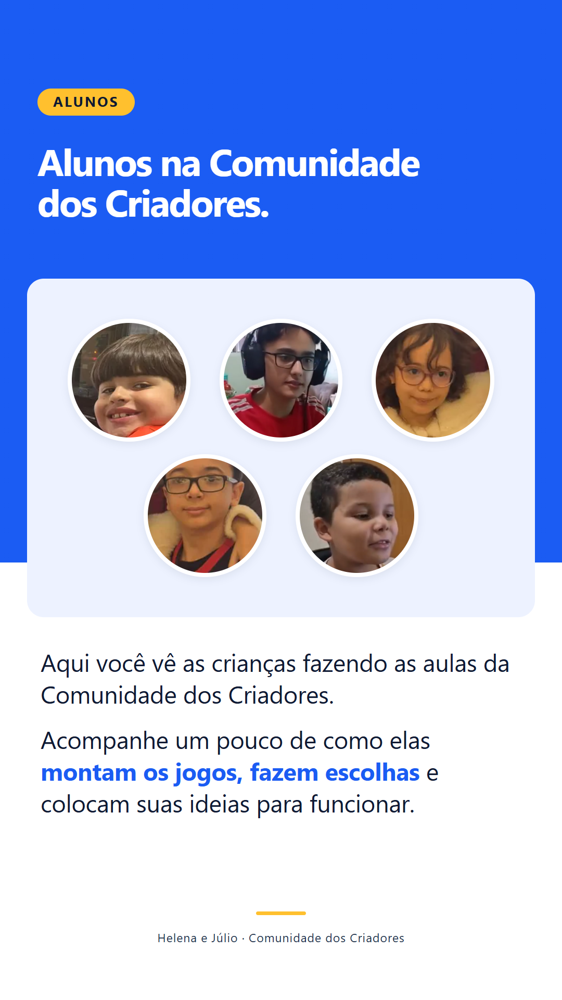
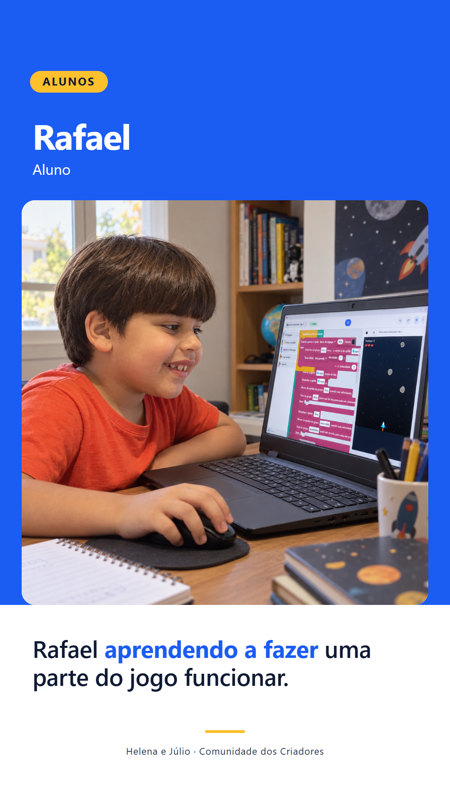
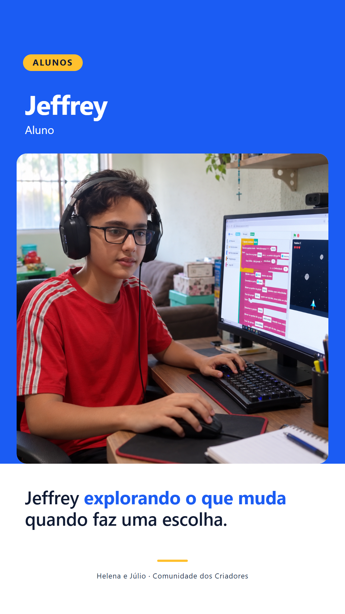
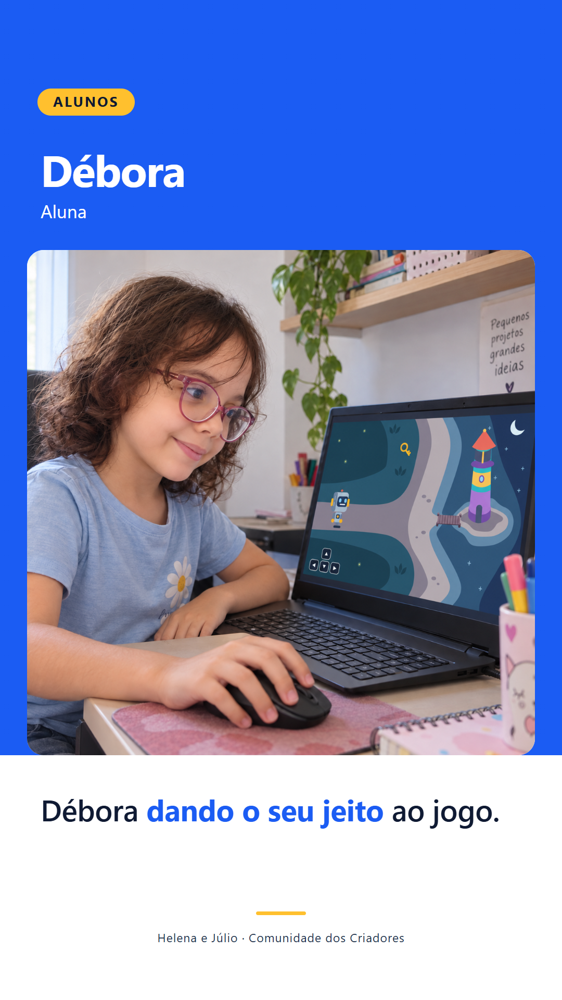
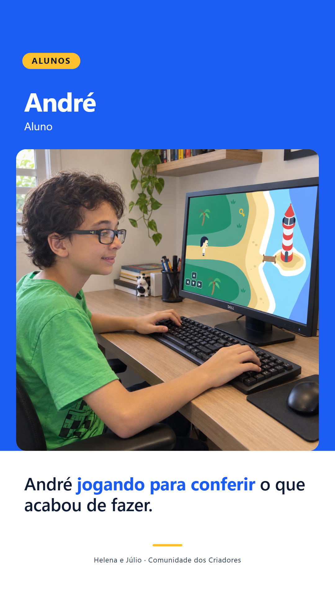
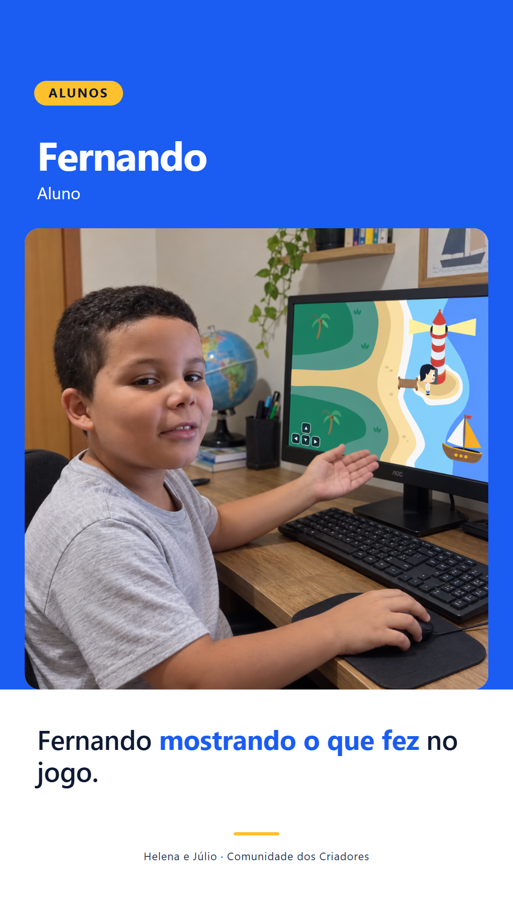
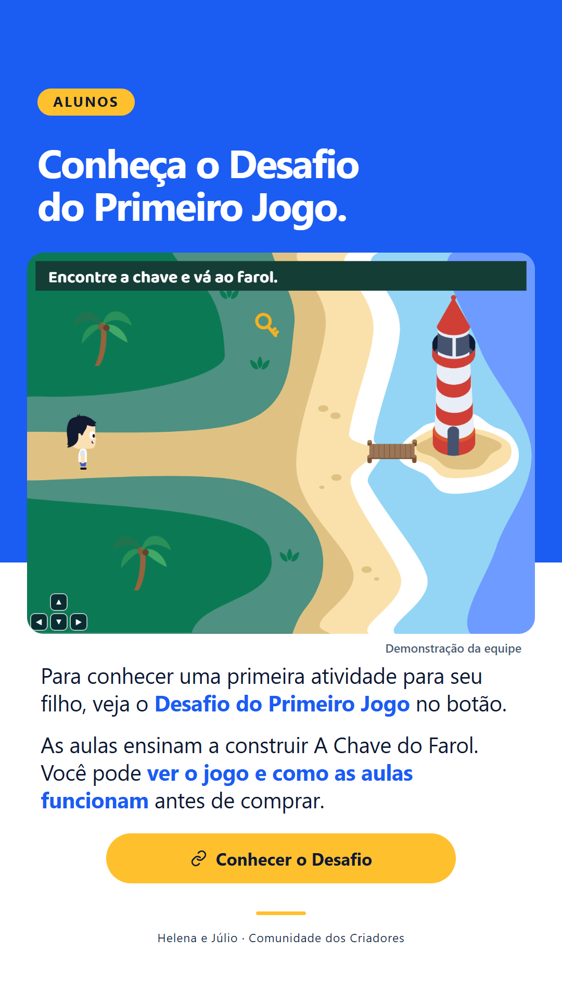

<!doctype html><meta charset="utf-8"><style>body{margin:20px;background:#dce4ee;display:grid;grid-template-columns:repeat(3,324px);gap:20px;font:18px Arial}figure{margin:0}img{width:324px;display:block}figcaption{padding:7px 0}</style><figure><figcaption>AL01</figcaption></figure><figure><figcaption>AL02 · Rafael</figcaption></figure><figure><figcaption>AL03 · Jeffrey</figcaption></figure><figure><figcaption>AL04 · Débora</figcaption></figure><figure><figcaption>AL05 · André</figcaption></figure><figure><figcaption>AL07 · Fernando</figcaption></figure><figure><figcaption>AL06</figcaption></figure>